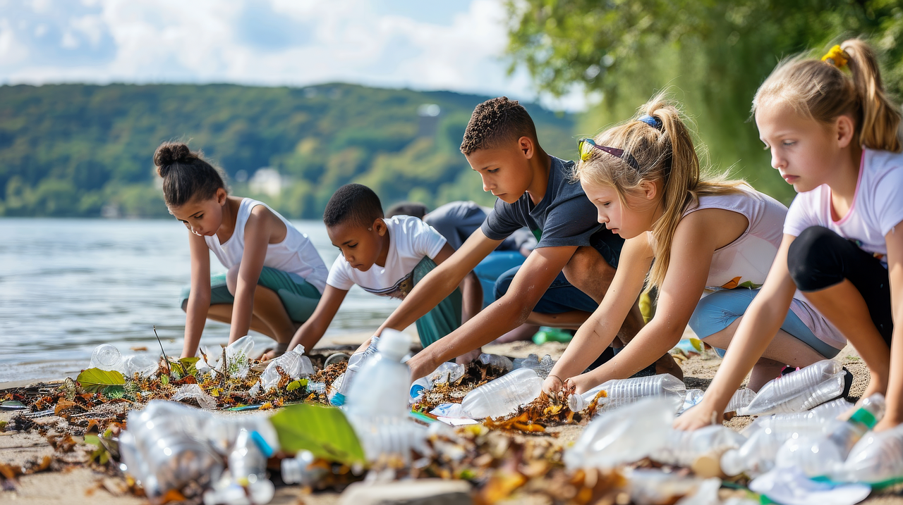

Nueva Iniciativa de Reforestación
15 de Mayo, 2024
Estamos emocionados de lanzar nuestra nueva iniciativa de reforestación en la región del Amazonas.
Leer másÚnete a nuestra comunidad de voluntarios y marca la diferencia
Empieza Hoy
Estamos comprometidos a mejorar la vida de las personas y las comunidades a través de programas de voluntariado significativos y sostenibles.
 Leer más sobre nuestra misión"Ser voluntario me ha permitido ver el impacto positivo que puedo tener en mi comunidad."
"Gracias a los voluntarios, hemos podido llevar educación a lugares donde nunca antes había llegado."
12 de Junio, 2024
Parque Central
Registrarse25 de Junio, 2024
Centro Comunitario
Registrarse10 de Julio, 2024
Clínica Municipal
Registrarse15 de Mayo, 2024
Estamos emocionados de lanzar nuestra nueva iniciativa de reforestación en la región del Amazonas.
Leer más30 de Abril, 2024
Gracias a la comunidad, hemos superado nuestro objetivo de donaciones de sangre este año.
Leer más20 de Abril, 2024
Felicitamos a nuestros voluntarios destacados por su dedicación y esfuerzo.
Leer másPara ser voluntario, simplemente completa nuestro formulario de solicitud en línea y uno de nuestros coordinadores de voluntarios se pondrá en contacto contigo para discutir las oportunidades disponibles.
No hay requisitos específicos para ser voluntario. ¡Todos son bienvenidos a unirse a nuestra causa y marcar la diferencia!
Puedes realizar una donación en línea a través de nuestro sitio web o visitando nuestras oficinas. También aceptamos donaciones en especie.
No hay una duración mínima establecida. Apreciamos cualquier tiempo que puedas dedicar, ya sea de forma regular o ocasional.
Las actividades pueden variar desde eventos comunitarios y campañas de sensibilización hasta trabajo de oficina y asistencia directa a beneficiarios. Siempre intentamos adaptar las oportunidades según tus intereses y habilidades.
Puedes obtener más información sobre eventos específicos visitando nuestra página de eventos en línea o contactándonos directamente a través de correo electrónico o teléfono.
Sí, ofrecemos programas de voluntariado diseñados específicamente para estudiantes de secundaria y universidad. Estos programas pueden variar según la ubicación y la temporada.

Agradecemos a todos nuestros patrocinadores y colaboradores por su apoyo continuo.